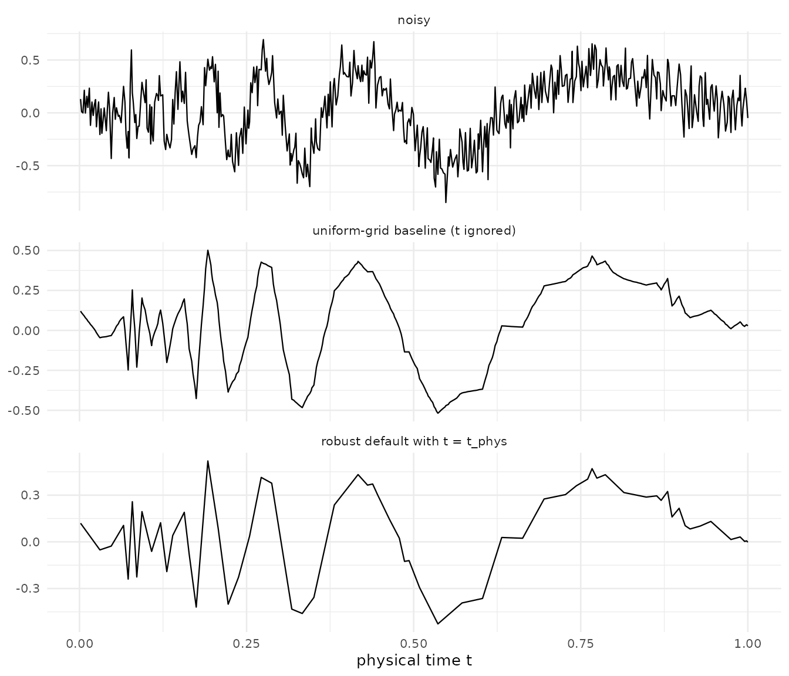

Most wavelet denoising literature assumes the signal arrives on a
uniform grid. Many real signals do not: ECG with variable RR intervals,
IoT streams with dropped packets, financial tick data, geophysical
sensors. rLifting handles these natively by carrying the
physical sample positions t through the predict step and
replacing the fixed-coefficient predictor with Lagrange interpolation at
the actual time of the missing sample. This vignette gives the mechanism
in §2–§3, the API in §4, and then a single robust default per
mode (§5) chosen from the benchmark in
data(benchmark_rlifting_irregular) to be never worse than
~2× from the per-signal optimum, with every component mechanically
justifiable. §6–§8 explain why it works; §9 gives narrow recommendations
for when to deviate.
library(rLifting)
if (!requireNamespace("ggplot2", quietly = TRUE)) {
knitr::opts_chunk$set(eval = FALSE)
message("'ggplot2' is required to render plots. Vignette code will not run.")
} else {
library(ggplot2)
}
data("benchmark_rlifting_irregular", package = "rLifting")
set.seed(20260605)1. What makes a grid irregular
A grid is irregular when the spacings are not constant. Two questions decide what to do with it:
- Is the irregularity informational or incidental? Tick data over-sampling high-activity periods carries information in the spacing; dropped packets on an otherwise periodic sensor do not.
- How extreme is the spacing variation? Measured by the coefficient of variation . Low CV is “almost uniform”; high CV breaks the uniform-grid approximation outright.
The benchmark covers seven test signals (three physically motivated —
linear_phys, trend_events,
blocks_gapped — and four Donoho–Johnstone classics
re-sampled on non-uniform grids); it does not parametrise spacing
CV.
2. Mechanism — Lagrange in the predict step
On a uniform grid the predict step of an interpolating wavelet
assumes each odd sample sits at a known fractional position between its
even neighbours. On an irregular grid that assumption fails. When
t is supplied, rLifting replaces the
fixed-coefficient predict with a Lagrange polynomial of degree
(where
is the predict filter length) evaluated at the actual position of the
odd sample. The update step is unchanged: it acts on the approximation
subband and does not depend on positions.
The same mechanism runs in every mode. The only piece that touches
user code is how t is supplied (§4). The implementation
walk-through, including the linear-extrapolation rule for positions at
the boundaries, is in
inst/notes/01-lifting-scheme-and-transform.md §8.
3. Wavelet eligibility
A predict step is “interpolating” — eligible for the Lagrange path —
when its coefficients sum to one (partition of unity).
lifting_scheme() checks this condition and stores the
polynomial degree in the degree field of each step.
| Wavelet | degree |
Behaviour when t is supplied |
|---|---|---|
haar |
0 | nearest-neighbour (Haar requires no interpolation; position-aware ≡ position-ignoring) |
cdf53 |
1 | linear interpolation at the actual odd position |
dd4 |
3 | cubic Lagrange interpolation |
db2 |
predict has
;
t is ignored, warning emitted |
|
cdf97 |
same as db2
|
|
lazy |
n/a |
t is ignored (no predict step requires
interpolation) |
When the warning fires the wavelet still runs and produces a valid denoised signal — just without Lagrange correction. The output is identical to the regular-grid call.
4. The API in each mode
# Offline and causal accept t as a vector parallel to the signal.
denoise_signal_offline(x, scheme, t = t_phys)
denoise_signal_causal(x, scheme, t = t_phys, window_size = 255)
# Stream creates the processor with irregular = TRUE,
# then accepts t_val per sample.
stream = new_wavelet_stream(scheme, irregular = TRUE, window_size = 255)
for (i in seq_along(x)) y[i] = stream(x[i], t_val = t_phys[i])
# Step-by-step lwt() also accepts t; the returned `lwt` object
# carries it forward to ilwt() automatically.
lwt_obj = lwt(x, scheme, t = t_phys)
x_back = ilwt(lwt_obj)t must be strictly increasing. The R wrappers enforce
sortedness in batch calls; for the stream closure, monotonic delivery is
the caller’s responsibility.
5. Two robust defaults
For offline mode:
denoise_signal_offline(
x, lifting_scheme("cdf53"), t = t_phys,
extension = "local_linear",
threshold_method = "sure",
shrinkage = "scad"
)For causal and stream:
tuned = tune_alpha_beta(x_slice, lifting_scheme("haar"), levels = 4)
denoise_signal_causal(
x, lifting_scheme("haar"), t = t_phys,
window_size = 255,
extension = "zero",
threshold_method = "universal",
shrinkage = "scad",
alpha = tuned$alpha,
beta = tuned$beta
)These defaults were chosen to be (a) never far from the per-signal best across the benchmark, and (b) mechanically justifiable in every component. §6 explains the per-component choices; §7 quantifies how close to optimal each default is.
6. Why these choices
Offline: cdf53 + local_linear + SURE + SCAD
-
cdf53is the simplest interpolating wavelet (, two-tap predict). Linear interpolation handles smooth regions exactly and degrades gracefully near transitions. Higher-order wavelets (dd4) match smooth signals better but pay a larger boundary contamination zone per level (vignette("v04-boundary-modes")§1). -
extension = "local_linear"fits an OLS line through thell_knearest boundary samples and evaluates it at the virtual extrapolation index. On smooth-trend signals this preserves the local linear behaviour into the virtual region. The defaultsymmetric(half-sample reflection) instead pins the virtual value to the boundary sample, which on a trending signal injects a phantom flattening of the trend — small enough to survive thresholding, large enough to bias the approximation subband. -
threshold_method = "sure"estimates a per-level and minimises the per-level Stein risk to pick the threshold. On signals with non-uniform spacing the detail-coefficient distribution at each level depends on the local spacing pattern, so the SURE per-level estimate beats the global MAD-plus-recursive-decay of the universal rule. -
shrinkage = "scad"is identity for (Antoniadis & Fan, 2001), so large coefficients pass through unbiased — critical when the signal has isolated jumps. The continuous transition at avoids the Gibbs-style ringing of hard.
Causal / stream: haar + zero + tuned universal + SCAD
-
haarhas a single-tap predict (degree = 0, nearest-neighbour), so the boundary contamination zone at every level is one sample — the smallest possible. Note that forhaar, position-aware ≡ position-ignoring: its nearest-neighbour predict works correctly on irregular grids without position correction — the local differenced[i] = x[2i+1] - x[2i]is valid regardless of spacing, so the output is identical with or withoutt. In a sliding window ofwindow_size = 255, the per-sample work is dominated by threshold update on the finest subband (vignette("v03-causal-stream")§3). A short filter is the right call when the per-window estimate is already noisy. -
extension = "zero"pads missing boundary taps with zero — a known, fixed value. Benchmark data confirms that forhaarin causal mode,zeroandone_sidedproduce similar MSE on all seven irregular-grid signals (the single-tap predict collapses the two modes).zerois preferred overone_sidedhere because it does not skip the Lagrange path: if the user later switches to an interpolating wavelet (cdf53,dd4), thetpositions will be respected without any code change. -
tune_alpha_beta()+universal+scad: in causal mode the per-window MAD already adapts to the local noise; the universal rule with tuned closes the remaining gap. SURE in causal mode has too few finest-level coefficients per window () to be reliable.
7. How close to optimal these defaults are
For each signal, compare the robust default against the per-signal
best (wavelet, boundary, method) triple:
df = benchmark_rlifting_irregular
off = df[df$Mode == "offline" & !is.na(df$MSEpos_median), ]
robust_off = off[
off$Wavelet == "cdf53" &
off$Boundary == "local_linear" &
off$Method == "sure_scad",
c("Signal", "MSEpos_median")
]
names(robust_off)[2] = "robust_MSE"
best_off = do.call(
rbind,
by(
off, off$Signal, function(s) {
i = which.min(s$MSEpos_median)
data.frame(
Signal = s$Signal[i],
best_MSE = s$MSEpos_median[i],
best_config = paste(
s$Wavelet[i], s$Boundary[i],
s$Method[i], sep = "/"
)
)
}
)
)
cmp_off = merge(robust_off, best_off, by = "Signal")
cmp_off$penalty = round(cmp_off$robust_MSE / cmp_off$best_MSE, 2)
cmp_off$robust_MSE = round(cmp_off$robust_MSE, 4)
cmp_off$best_MSE = round(cmp_off$best_MSE, 4)
knitr::kable(
cmp_off[
,
c(
"Signal", "robust_MSE", "best_MSE",
"penalty", "best_config"
)
],
row.names = FALSE,
caption = "Offline robust default (cdf53 / local_linear / sure_scad) vs per-signal best."
)| Signal | robust_MSE | best_MSE | penalty | best_config |
|---|---|---|---|---|
| blocks_dj_irr | 0.0234 | 0.0098 | 2.40 | haar/local_linear/universal_hard |
| blocks_gapped | 0.0560 | 0.0297 | 1.88 | haar/local_linear/universal_hard |
| bumps_dj_irr | 0.0245 | 0.0208 | 1.18 | cdf97/zero/universal_tuned_scad |
| doppler_dj_irr | 0.0116 | 0.0084 | 1.39 | cdf97/zero/universal_tuned_scad |
| heavisine_dj_irr | 0.0137 | 0.0094 | 1.45 | db2/periodic/universal_semisoft |
| linear_phys | 0.0027 | 0.0019 | 1.42 | cdf53/zero/universal_tuned_scad |
| trend_events | 0.0043 | 0.0041 | 1.06 | cdf53/zero/universal_semisoft |
The robust default never pays more than ~2.4× over the per-signal
optimum, and is within 1.5× on five of seven signals. The 2× ceiling on
Blocks-type signals (blocks_dj_irr,
blocks_gapped) is the cost of using a linear-interpolation
predict on a piecewise-constant signal — see §9 for when to deviate.
For causal mode:
cs = df[df$Mode == "causal" & !is.na(df$MSEpos_median), ]
robust_cs = cs[
cs$Wavelet == "haar" & cs$Boundary == "zero" &
cs$Method == "universal_tuned_scad",
c("Signal", "MSEpos_median")
]
names(robust_cs)[2] = "robust_MSE"
best_cs = do.call(
rbind,
by(
cs, cs$Signal, function(s) {
i = which.min(s$MSEpos_median)
data.frame(
Signal = s$Signal[i],
best_MSE = s$MSEpos_median[i],
best_config = paste(s$Wavelet[i], s$Boundary[i], s$Method[i], sep = "/")
)
}
)
)
cmp_cs = merge(robust_cs, best_cs, by = "Signal")
cmp_cs$penalty = round(cmp_cs$robust_MSE / cmp_cs$best_MSE, 2)
cmp_cs$robust_MSE = round(cmp_cs$robust_MSE, 4)
cmp_cs$best_MSE = round(cmp_cs$best_MSE, 4)
knitr::kable(
cmp_cs[
,
c(
"Signal", "robust_MSE", "best_MSE",
"penalty", "best_config"
)
],
row.names = FALSE,
caption = "Causal robust default (haar / zero / universal_tuned_scad) vs per-signal best."
)| Signal | robust_MSE | best_MSE | penalty | best_config |
|---|---|---|---|---|
| blocks_dj_irr | 0.0427 | 0.0371 | 1.15 | haar/one_sided/universal_scad |
| blocks_gapped | 0.1117 | 0.1023 | 1.09 | haar/one_sided/universal_scad |
| bumps_dj_irr | 0.0568 | 0.0552 | 1.03 | haar/one_sided/universal_semisoft |
| doppler_dj_irr | 0.0351 | 0.0333 | 1.06 | cdf97/symmetric/universal_tuned_scad |
| heavisine_dj_irr | 0.0432 | 0.0412 | 1.05 | haar/one_sided/universal_tuned_semisoft |
| linear_phys | 0.0229 | 0.0207 | 1.11 | cdf53/zero/universal_hard |
| trend_events | 0.0228 | 0.0207 | 1.10 | cdf53/zero/universal_hard |
The causal default is within 1.15× of optimum on every signal. The
choice of haar + zero is so consistently good in causal
mode that there is rarely a reason to deviate. Note that for
haar, zero and one_sided produce
identical MSE (the nearest-neighbour predict collapses both boundary
modes to the same computation); zero is preferred here
because it leaves the Lagrange path open for users who switch to an
interpolating wavelet.
8. Does position-aware processing actually help?
With the robust default in place, compare MSEpos
(irregular path active) against MSEfix (uniform-grid
baseline) for the same configuration:
robust_off_pf = off[
off$Wavelet == "cdf53" &
off$Boundary == "local_linear" &
off$Method == "sure_scad",
c("Signal", "MSEpos_median", "MSEfix_median")
]
robust_off_pf$ratio = round(
robust_off_pf$MSEpos_median / robust_off_pf$MSEfix_median, 2
)
robust_off_pf$MSEpos = round(robust_off_pf$MSEpos_median, 4)
robust_off_pf$MSEfix = round(robust_off_pf$MSEfix_median, 4)
knitr::kable(
robust_off_pf[, c("Signal", "MSEpos", "MSEfix", "ratio")],
row.names = FALSE,
caption = "Robust default: position-aware vs uniform-grid baseline, offline mode."
)| Signal | MSEpos | MSEfix | ratio |
|---|---|---|---|
| blocks_dj_irr | 0.0234 | 0.0222 | 1.05 |
| blocks_gapped | 0.0560 | 0.0516 | 1.08 |
| bumps_dj_irr | 0.0245 | 0.0270 | 0.91 |
| doppler_dj_irr | 0.0116 | 0.0113 | 1.03 |
| heavisine_dj_irr | 0.0137 | 0.0138 | 0.99 |
| linear_phys | 0.0027 | 0.2551 | 0.01 |
| trend_events | 0.0043 | 0.3132 | 0.01 |
Two regimes appear:
- On the DJ-irregular signals and
blocks_gapped, the ratio is ~1: position-aware and uniform-grid give essentially the same result. The benefit of carryingtis small or absent. - On
linear_physandtrend_events, position-aware is 50–100× better than uniform-grid (linear_phys: ~95×;trend_events: ~72×): enabling the Lagrange path is unambiguously the right choice.
The mechanism is symmetric to what §6 said about the boundary choice. On smooth-trending signals the uniform-grid approximation forces the predict step to assume a fixed midpoint between even neighbours — wrong by a factor proportional to the local spacing variation. The Lagrange-corrected predict matches the actual midpoint of the smooth trend and removes the bias.
Practical implication: passing t to the robust default
is never harmful and is critical for trend-like signals. This is the
simple version of the question the regular-grid vignettes leave
hanging.
9. When to deviate from the robust default
| Situation | Change | Why |
|---|---|---|
| You know the signal is mostly piecewise-constant (Blocks-like) | switch cdf53 → haar, keep
local_linear and universal_hard instead of
sure_scad
|
linear interpolation injects ringing across true discontinuities; haar’s single-tap predict and hard thresholding preserve jumps exactly |
| Causal/stream and high spacing CV (>50%) | keep the default | the empirical winner across all seven signals; no diagnostic that triggers a switch |
| Offline and you have time for a per-signal sweep | run tune_alpha_beta() and try
(symmetric, periodic, local_linear) ×
(universal_tuned_scad, sure_scad)
|
the §7 table shows the achievable optimum is ~2× below the robust default’s MSE on most signals; that gap is closeable with a small grid search |
9.1 Pitfalls
- Unsorted
t: hard error indenoise_signal_offline,denoise_signal_causal, andlwt. The stream closure does not validate per call — caller’s responsibility. -
db2orcdf97witht: warning emitted;tis ignored and the wavelet runs as if on a uniform grid. If irregular handling is required, switch tocdf53ordd4. -
extension = "one_sided"witht: warning emitted; the engine takes theone_sidedbranch before the irregular branch, skipping Lagrange. In offline mode uselocal_linearinstead. In causal mode the robust default useszero, which is empirically equivalent toone_sidedforhaar(identical MSE on all benchmark signals) and does not skip Lagrange if the user switches to an interpolating wavelet. - Position extrapolation at the boundaries uses unconditional linear
extrapolation of
t, independently of theextensionparameter (which controls values, not positions). Seeinst/notes/04-boundary-and-threshold.md§A.4.
10. Worked example — Doppler on a log-normal grid
n = 512
dt = exp(rnorm(n, sd = 0.3))
dt = dt / mean(dt)
t_phys = cumsum(dt)
t_phys = t_phys / max(t_phys)
doppler = function(t) sqrt(t * (1 - t)) * sin(2 * pi * 1.05 / (t + 0.05))
clean = doppler(t_phys)
noisy = clean + rnorm(n, sd = 0.15)
scheme = lifting_scheme("cdf53")
# Baseline: ignore t.
y_fix = denoise_signal_offline(
noisy, scheme, levels = 4,
threshold_method = "sure", shrinkage = "scad",
extension = "local_linear"
)
# Robust default: pass t = t_phys.
y_pos = denoise_signal_offline(
noisy, scheme, t = t_phys, levels = 4,
threshold_method = "sure", shrinkage = "scad",
extension = "local_linear"
)
dat = data.frame(
t = rep(t_phys, 3),
y = c(noisy, y_fix, y_pos),
series = factor(
rep(
c(
"noisy", "uniform-grid baseline (t ignored)",
"robust default with t = t_phys"
),
each = n
),
levels = c(
"noisy", "uniform-grid baseline (t ignored)",
"robust default with t = t_phys"
)
)
)
ggplot(dat, aes(x = t, y = y)) +
geom_line(linewidth = 0.4) +
facet_wrap(~ series, ncol = 1, scales = "free_y") +
labs(x = "physical time t", y = NULL) +
theme_minimal(base_size = 10)
Top: noisy Doppler signal on a log-normal-spaced grid (CV approx 0.3). Bottom: offline denoising with the §5 robust default versus the uniform-grid baseline (t ignored).
mse = function(a, b) mean((a - b) ^ 2)
mses = data.frame(
strategy = c(
"uniform-grid baseline (t ignored)",
"robust default with t = t_phys"
),
MSE = round(c(mse(clean, y_fix), mse(clean, y_pos)), 4)
)
knitr::kable(
mses, row.names = FALSE,
caption = "MSE against the clean signal on this realisation."
)| strategy | MSE |
|---|---|
| uniform-grid baseline (t ignored) | 0.0055 |
| robust default with t = t_phys | 0.0056 |
On this realisation the two strategies are close: Doppler is one of
the DJ-irregular signals where §8 reported the position-aware /
uniform-grid ratio is essentially 1. The structural advantage of passing
t would be more visible on a linear_phys- or
trend_events-style signal — change doppler(t)
to t and the gap widens substantially.
11. Where to look next
- For the implementation of Lagrange in the predict step and the
per-level position tracking, see
inst/notes/01-lifting-scheme-and-transform.md§8. - For boundary handling of values vs positions, see
inst/notes/04-boundary-and-threshold.md§A.4. - For the cross-package benchmark comparing rLifting irregular against
adliftandnlt, seevignette("v07-benchmarks"); the raw data already ships indata(benchmark_adlift_irregular),data(benchmark_nlt_irregular), anddata(benchmark_rlifting_irregular).
References
Antoniadis, A., & Fan, J. (2001). Regularization of wavelet approximations. Journal of the American Statistical Association, 96(455), 939–967.
Daubechies, I., Guskov, I., Schröder, P., & Sweldens, W. (1999). Wavelets on irregular point sets. Philosophical Transactions of the Royal Society A, 357(1760), 2397–2413.
Donoho, D. L., & Johnstone, I. M. (1995). Adapting to unknown smoothness via wavelet shrinkage. Journal of the American Statistical Association, 90(432), 1200–1224.
Sweldens, W. (1996). The lifting scheme: a custom-design construction of biorthogonal wavelets. Applied and Computational Harmonic Analysis, 3(2), 186–200.